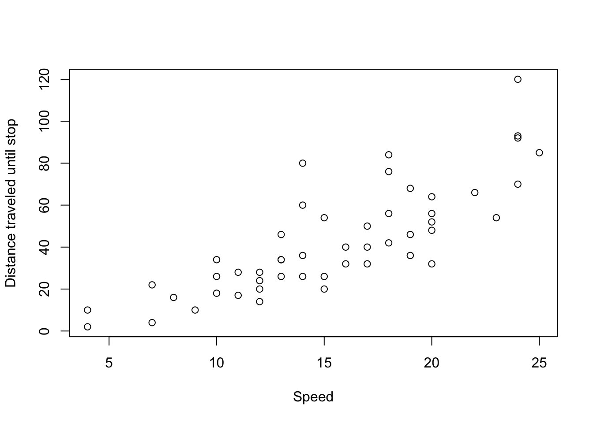
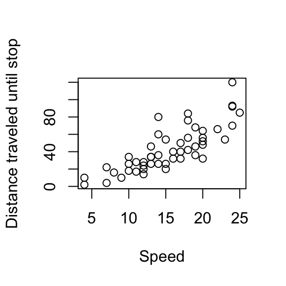

Module 10: RMarkdown
Dai Shizuka
November 14, 2023
Before we start:
You will need to make sure your computer can run a LaTex engine:
- For Windows: Go to https://miktex.org/howto/install-miktex and follow directions to install MikTex.
- For Mac: Go to https://tug.org/mactex/mactex-download.html and follow directions to install MacTex.
You should download this “R Markdown Reference Guide” https://www.rstudio.com/wp-content/uploads/2015/03/rmarkdown-reference.pdf
In your R Studio preferences, go to “R Markdown”, and set “Show Output Preview in” to Viewer Pane.
6.1 Why R Markdown?
R Markdown is a formatting syntax that allows you to use plain text to combine text + R codes and apply custom formatting to generate reproducible reports. R Markdown can be implemented in R Studio. (For more details on using R Markdown see http://rmarkdown.rstudio.com)
The main reason to use R Markdown is that it allows you to produce reproducible reports using plain text. That is, someone else could take your code and re-create the report exactly. Moreover, you can flexibly render these reports in different formats including html, pdf and word documents. You can also use it to make websites or slides for presentations. This can all accomplished without using any special formatting from proprietary software. What R Studio does is facilitate the production of this text.
Download a couple of examples of this here:
To render HTML documents, R Markdown uses Markdown, a simple formatting syntax (aka markup language) that can then be converted to HTML. To render PDF documents, R Markdown will use LaTex, a different markup language used to format manuscripts.
To use R Markdown, you will open a new .Rmd file in
RStudio. Go to
File->New File->R Markdown. Give the
document a title, and Select “HTML” as the output option. When you open
a new .Rmd file, you will get a document that has the basic format of
the document started for you.
Now, press Command-Shift-K or the
“Knit” button at the top of the R Studio window to
generate an HTML document. You see that the document includes formatted
text, codes and plot.
The output should look like this.This shows you
the basics of how R Markdown works.
Now, let’s learn a bit more about the components of this .Rmd document.
6.2 Components of R Markdown
There are three components to an R Mardown document (.Rmd):
- YAML Header
- Text
- Code chunks
6.2.1 YAML Header
The document starts with the YAML header, which looks like this:
---
title: "Title"
author: "Dai Shizuka"
date: "2/4/2017"
output: html_document
---The YAML Header specifies how the document will be formatted. For example, in this case, we have specified that the output will be an HTML document.
Try changing the output type as below and render the document using
Command-Shift-K or clicking the
Knit button.
---
title: "Title"
author: "Dai Shizuka"
date: "2/4/2017"
output: pdf_document
---You will see a pdf document preview pop up. You will also see that the .pdf document now exists in the folder alongside the .Rmd file.
Now change the output type to “html_notebook” and “knit” the document.
---
title: "Title"
author: "Dai Shizuka"
date: "2/4/2017"
output: html_notebook
---6.2.2 Text
Now look below the header. You will see text that looks like this:
## R Markdown
This is an R Markdown document. Markdown is a simple formatting syntax for authoring HTML, PDF, and MS Word documents. For more details on using R Markdown see <http://rmarkdown.rstudio.com>.
When you click the **Knit** button a document will be generated that includes both content as well as the output of any embedded R code chunks within the document. You can embed an R code chunk like this:
...This is main text that will appear in your document. The text formatting has been marked up using the “Markdown” syntax. For example, the double-hashtag (##) specifies that this line will be a header (of certain size). The words in between double-asterisks (**) shows up as bold.
The text formatting follows Pandoc Markdown, i.e., a version of the “Markdown” syntax that is used by the document converter employed by R Studio (which is called Pandoc). You can get most of the formatting syntax from the R Markdown Reference Guide you downloaded. You can get even more detail here.
6.2.3 Code Chunks
R code chunks can be embedded within the document. These lines of code will be run, and the outputs of the code can be displayed or hidden. This means that you can generate plots within the .Rmd file using code and the output code will show up in the rendered document.
R code chunks are delimited by three backticks: “```”, like so:
```{r, echo=TRUE}
summary(cars)
```Rendering the document with this code chunk will result in this:
summary(cars) ## speed dist
## Min. : 4.0 Min. : 2.00
## 1st Qu.:12.0 1st Qu.: 26.00
## Median :15.0 Median : 36.00
## Mean :15.4 Mean : 42.98
## 3rd Qu.:19.0 3rd Qu.: 56.00
## Max. :25.0 Max. :120.00echo=FALSE:
```{r, echo=FALSE}
summary(cars)
```## speed dist
## Min. : 4.0 Min. : 2.00
## 1st Qu.:12.0 1st Qu.: 26.00
## Median :15.0 Median : 36.00
## Mean :15.4 Mean : 42.98
## 3rd Qu.:19.0 3rd Qu.: 56.00
## Max. :25.0 Max. :120.00You can see that echo=FALSE means that the actual line
of code will not be displayed, but the result will be displayed.
```{r, echo=TRUE, results="hide"}
summary(cars)
```summary(cars) So results="hide" hides the output of the R code inside
the chunk
If you run two lines of code that each produce outputs using the default chunk options, your result might look like this:
mean(cars$speed)## [1] 15.4mean(cars$dist)## [1] 42.98collapse=TRUE:
```{r, echo=TRUE, collapse="TRUE"}
mean(cars$speed)
mean(cars$dist)
```mean(cars$speed)
## [1] 15.4
mean(cars$dist)
## [1] 42.98From here on out, the code chunks presented will have the default chunk options unless otherwise noted.
6.3 Including Plots & Images
There are two ways to include images in the document: 1. You can import images 2. You can generate images using embedded R code
###6.3.1 Importing images
You can import images like this:
If you are going to be adding an external image to your document, the best thing to do is have a subfolder inside your working directory that stores images (name it something like “images”). Then, you can just refer to the image name inside that subfolder.
To try this out, go download any image (e.g., https://www.rstudio.com/wp-content/uploads/2014/07/RStudio-Logo-Blue-Gradient.png) and save it to the “images” subfolder you created.
{kind=link}
Now include this in your .Rmd file and “knit” to render.

You can control the size of the image like this:
{width=30%}
You can also embed images straight from a url:
{width=30%}
6.3.2 Embedding plots generated from R code
You can also embed plots that you produce using R code, for example:
```{r carsplot, echo=TRUE}
plot(cars$speed, cars$dist, xlab="Speed", ylab="Distance traveled until stop")
```Will give you:
plot(cars$speed, cars$dist, xlab="Speed", ylab="Distance traveled until stop")
Adjusting the plot dimensions versus the output size
You can change the size of the figure output in a couple of
ways.
First, you can adjust the size of the plotting region using
fig.height= and fig.width:
```{r carsplot, echo=TRUE, fig.width=3, fig.height=3}
plot(cars$speed, cars$dist, xlab="Speed", ylab="Distance traveled until stop")
```plot(cars$speed, cars$dist, xlab="Speed", ylab="Distance traveled until stop")
Or, you can change the size of the output usingout.width
or out.height. This preserves the aspect ratio by default.
```{r carsplot, echo=TRUE, out.width='50%'}
plot(cars$speed, cars$dist, xlab="Speed", ylab="Distance traveled until stop")
```plot(cars$speed, cars$dist, xlab="Speed", ylab="Distance traveled until stop")Group Exercise
- Go to this page and try to recreate this page using RMarkdown!